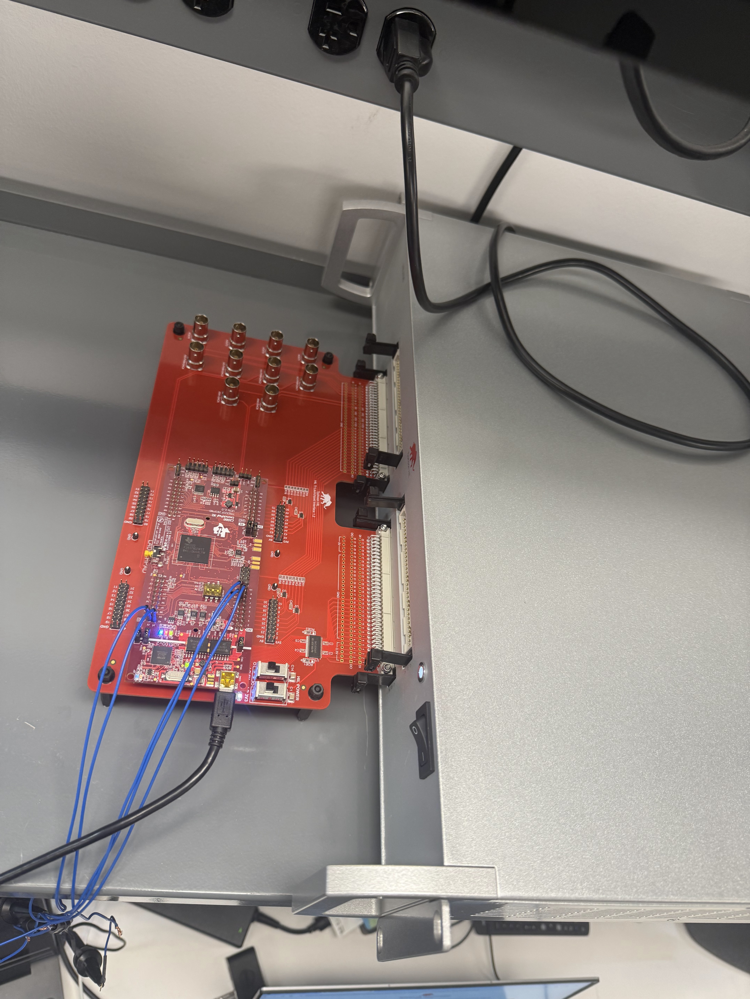
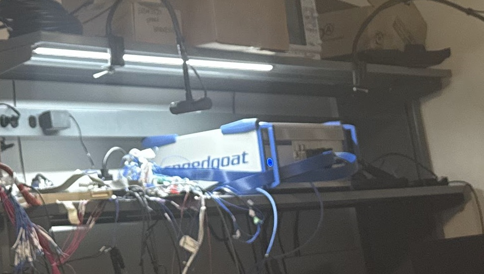
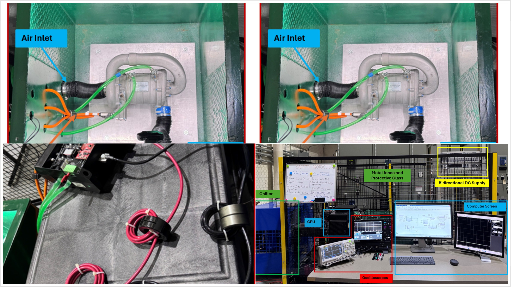
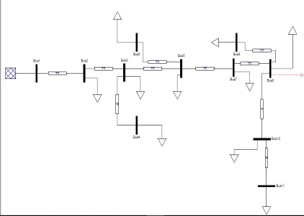
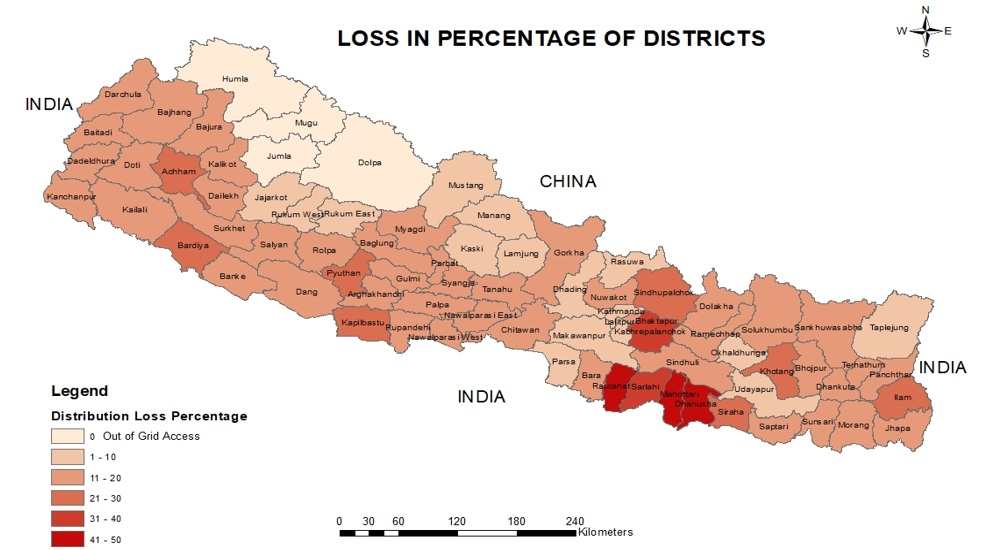
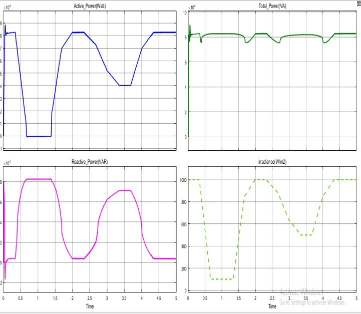
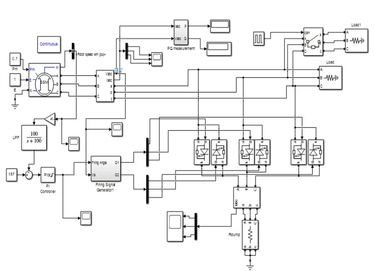

Ph.D. Student | Power Electronics & Motor Drives | High‑Speed PMSM Control | Advanced Control Systems
Ph.D. student in Electrical & Computer Engineering at Mississippi State University, specializing in
high‑performance motor drive control and power electronics for next‑generation energy systems.
Background spans both industry and research, including work in power distribution, high‑speed PMSM control,
and hardware‑in‑the‑loop (HIL) validation.
Research focuses on developing and optimizing control strategies for Ultra High‑Speed PMSM compressors,
utilizing FOC, DTC, and emerging MIMO‑based control frameworks to achieve robust, high‑bandwidth torque and
speed regulation. Interested in advanced converter topologies and real‑time control implementation for power
conversion and electric drive applications.
I work at the intersection of power electronics, advanced control systems,
and high‑performance electric drives. My focus is designing robust, high‑speed motor control
algorithms and implementing them on real hardware with modern simulation and HIL platforms.
I’ve contributed to Ultra High‑Speed PMSM drive projects—designing, tuning, and validating
strategies like Field‑Oriented Control (FOC), Direct Torque Control (DTC),
and emerging MIMO‑based control. My work spans modeling to implementation, targeting
high bandwidth, low torque ripple, and stable operation under extreme dynamics.
Beyond drives, I work on power converter control (e.g., modified PFC), digital loop design,
and real‑time validation using Plecs/RT‑Box. I enjoy translating control laws, machine models,
and converter dynamics into reliable, testable, hardware‑ready solutions.
Real‑Time ControlHigh‑Speed DynamicsEmbedded ImplementationElectrification Systems
Core Tools
MATLAB / Simulink
Plecs / RT‑Box
PSIM
Python
ETAP
LTspice
C / C++ (control prototyping)
Technical Domains
Motor Drives: FOC, DTC, MIMO strategies; flux/torque regulation
Power Electronics: PFC, inverter control; converter modeling & design
Control Systems: PI/PID tuning, ePLL, real‑time loop optimization
Currently a Ph.D. student in ECE at Mississippi State University, focused on
high‑speed PMSM control and power conversion for next‑gen energy systems.
Experience
Cummins Inc — Power Electronics Control & System Integration (Intern)Fridley, MN • May 2025 – Aug 2025

PMSM drive controls (FOC) HIL testing using Typhoon Real Time and TI LaunchPad

PMSM drive controls (FOC) HIL testing using Speedgoat Real Time
Mississippi State University — Graduate Teaching AssistantStarkville, MS • Jan 2022 – Present
Optimized PFC HIL testing using RT Box

Hardware Test for High Speed Compressor
Advanced College of Engineering & Management — Assistant LecturerKathmandu, Nepal • Apr 2022 – Dec 2022

11 kV Feeder Analysis using ETAP
Prism International – DLRMP — Project Engineer
Lalitpur, Nepal • Jan 2019 – Apr 2021

Loss Data for Nepal according to the District
Selected Projects

PV‑STATCOM
Enabled a PV inverter to provide active/reactive power based on irradiance to improve utilization.
Tools: MATLAB/Simulink, PSIM.

Controlled Rectifier Studies
Compared harmonic performance and power factor of GTO vs. Thyristor rectifiers for isolated micro‑grid loads.